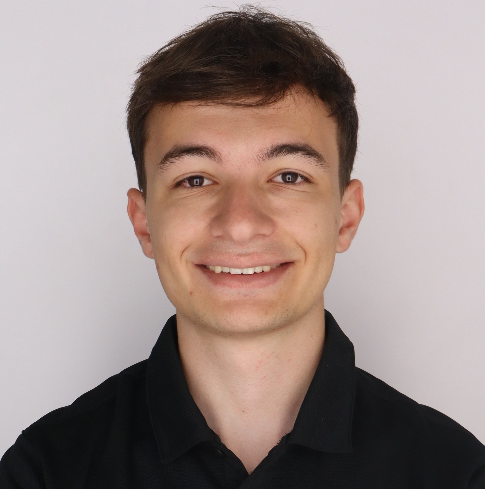

About Me
I am a senior at Purdue University studying Aeronautical & Astronautical Engineering, graduating in May 2026 with a specialization in aerodynamics. I am passionate about commercial aircraft and the critical engineering challenges involved in their development, particularly within aerodynamics-related R&D. I also serve as an undergraduate teaching assistant providing instructional support and mentoring students in engineering fundamentals. This Fall, I am a TA in AAE 333 (Fluid Mechanics), and last Spring I was a TA in AAE 204 (Mechanics of Materials).